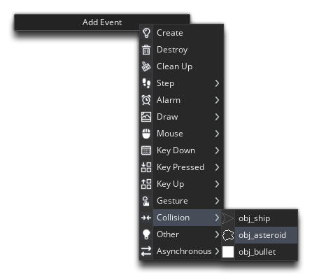
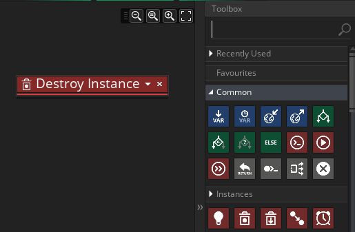
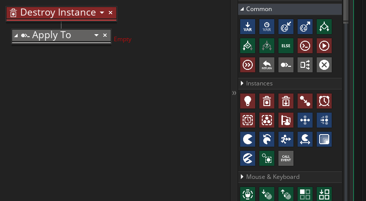
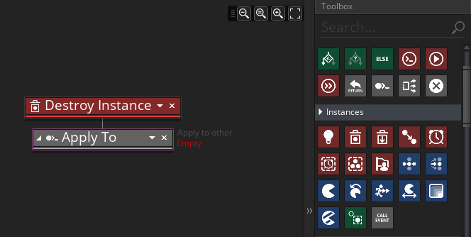
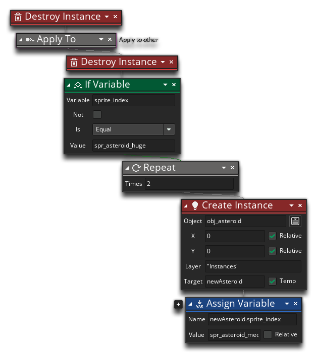
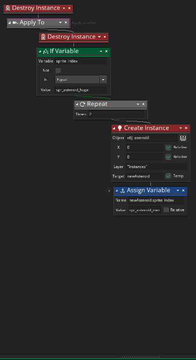
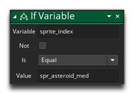
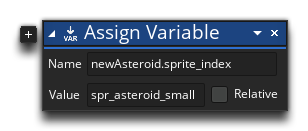

We need our bullets to destroy the asteroids, so to do that we need to open the object "obj_bullet" (if it's not already open) and add a Collision Event to it with the object "obj_asteroid":

The first thing we're going to do in this event is tell the bullet to destroy itself using the Destroy Instance action from the Instances section of the Toolbox:
You might think that this will prevent any further actions from running after the function is called, but in GameMaker Studio 2 destroying an instance doesn't happen until the end of the event, so although we've called this function, it doesn't exit the event and the instance won't actually be removed from the room until the collision event is resolved.
What other actions do we need? Well, we want the bullet to destroy the asteroids it hits, and we also want it to "split" the bigger asteroids into smaller ones. To do this we need to be able to access the asteroid that is being detected as colliding with the bullet, and for that we'll use the Apply To action, found in the Common section of the toolbox, so drag that in after the Destroy Instance action:

What this action does is tell GameMaker Studio 2 that any DnD™ actions added to it, will be applied to (run on) an instance or group of instances, and not the instance that actually contains the DnD™. In this case we are going to apply some code to the "other" instance in the collision. If you click on the drop-down arrow it will open up the Asset Explorer and on the left you can see a list of keywords to select from, one of which is "other". Select that now:

The other keyword, when used in the collision event like this, will reference the "other" instance in the collision, so in our game, the bullet is colliding with an asteroid and "other" will reference the unique ID of the asteroid, and the DnD™ - although in the bullet object - will be run as if it was in the asteroid object.
Now we need to add some DnD™to have the asteroid destroy itself, so we fill in the actions like this:

IMPORTANT! Actions that you want to be added to the Apply To chain should be dropped to the right of the action, and not underneath. By adding them to the right (as shown in the image above) you are telling GameMaker Studio 2 that the actions should be run on a different instance, while if you place the actions below, you are telling GameMaker Studio 2 to run them after anything chained to the Apply To block.
Now, because we changed the scope of the code to the "other" instance in the collision (the asteroid instance) using Apply To, the Destroy Instance action will destroy the asteroid that the bullet is colliding with. We also want to "split" the asteroid based on what size the sprite is, so for that we'll be creating a chain of actions using:
- If Variable - to check what value the sprite_index has.
- Repeat - to create a loop that will create 2 asteroids.
- Create Instance - to create the asteroids.
- Assign Variable - to set the new sprite on the asteroids created. You'll remember that we set the asteroid sprite to a random sprite in the Create Event of the object, and here we'll overwrite it with a different value. This works because the moment an instance is created, its create event is run and then the actions continue in the event that created the instance.
Put together in the DnD™ Editor, it will look like this:

Don't forget to drop actions to the sides of the If Variable and Repeat actions to chain them correctly!
The next check will be for the medium asteroid sprite, so click  on the If Variable to select it, and then use
on the If Variable to select it, and then use  to open the action menu and select Copy. Now, use the
to open the action menu and select Copy. Now, use the  again and select Paste:
again and select Paste:

You need to make the appropriate changes to these actions, first changing the sprite being checked for to the medium sprite:

Then change the sprite_index of the asteroids being created:

We could add another If Variable after that to check for a small asteroid sprite, but instead we'll do something slightly different...
Click the "Next" button to continue...